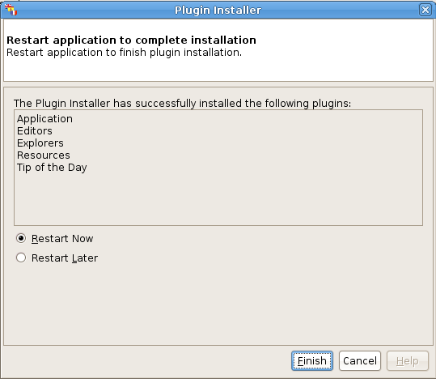

Trancestris Updates
Which methods to update Trancestris? :
Trancestris, itself, can be updated automatically, or manually.
It's up to you to decide which way you want to go.
Once you start Trancestris, you may see on the lower right
corner a warning message which tells you that there are updates
available for the program itself. It means that Trancestris
has been improved, bugs may be fixed, etc, and new mods are
available.

Click on the blue line "Click here to make
your application up to date", and the update process
will start.
Another way to check for updates, is to click on "Help"
- "Check for Updates".

The Update Process :
The first screen will give you information about the parts of
the program wich will be updated.

Here you can see that there are 5 modules to be updated: The
Application, the Editors, the Explorers, the Resources, and the
Tip of the Day modules.
Click on the "Next" button.

Here you have to accept the licences attached to the program.

Check the box "I accept the terms in all of the licence
agreements."
A warning screen. It is said that those plugins are not signed.
Don't worry it's just because we don't want to sign all modules
available as our modules are only available on our web site. So
no one is authorized to distribute the Ancestris and Trancestris
packages, nor the modules, nor updates.

Now the plugins have been updated, but to install them, you
have to restart the application.
Click on the "Finish" button. The program will restart
itself.
